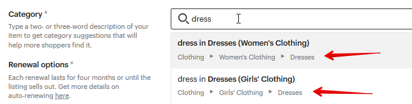
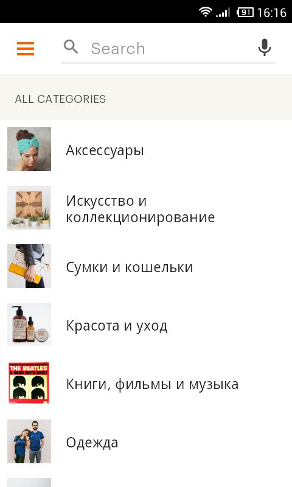
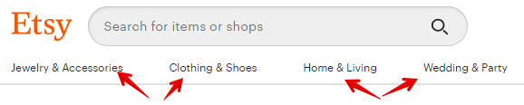
От выбора правильной категории зависит в том числе вероятность быть найден-
ным на Etsy. Особенно это касается товаров, которые сложно отнести к какой-
то конкретной категории или же они подходят сразу под несколько. В послед-
нем случае можно попробовать поместить товар в другую категорию, если,
например, просмотров совсем мало, или создать дубликаты с другими фотогра-
фиями и текстом и поместить их во все подходящие разделы сайта.
Категории также важны для мобильного приложения Etsy. Там при нажатии на
строку поиска покупатель сразу видит список основных разделов на Этси.
В компьютерной версии Etsy список категорий доступен в верхней части сайта.
Если вы сомневаетесь, в какую категорию отнести товар, то найдите на Etsy по-
хожие изделия конкурентов и посмотрите их выбор. Категория и подкатегории
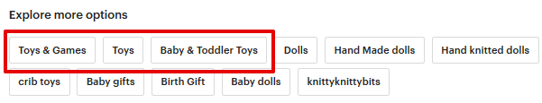
товара обычно показываются как первые теги внизу страницы (иногда бывает,
что главная категория показывается как первый тэг, а подкатегории – как по-
следние тэги).
Полный список доступных на Этси категорий вы можете найти на странице
https://www.etsy.com/help/categories/seller
Сколько времени проходит, прежде чем листинг попадает в
поиск Etsy
Обычно уже в течение часа после добавления вы можете найти свой листинг
через поиск Etsy. Однако в редких случаях этот срок может увеличиться до 24
часов.
В первые 2-5 суток практически по любым поисковым фразам он будет нахо-
диться на 10-й или более дальних страницах. А потом начнёт движение на бо-
лее-менее постоянные позиции.
Если и по прошествии этого времени товара нет в поиске (и вы не можете найти
его по ключевым словам даже в поиске по магазину) – стоит написать в тех-
поддержку Etsy.
Какие сроки размещения листингов
Каждый новый листинг активен и видим на Этси в течение 4 месяцев.
После этого он переходит в раздел Expired, и покупатели его больше не видят у
вас в магазине.
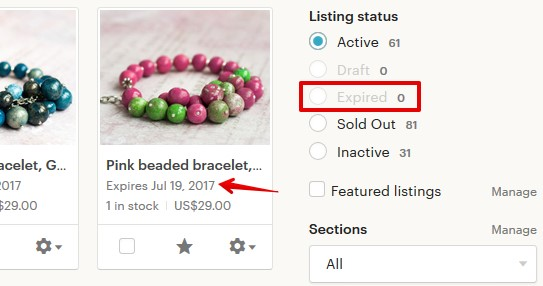
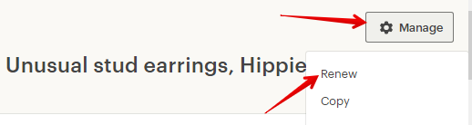
Можно ли размещать товар на Etsy дольше, чем 4 месяца
Да, нужно обновить истекший листинг (Renew). Для этого найдите нужный ли-
стинг в разделе Expired своего магазина, откройте его для редактирования,
нажмите кнопку Manage и выберите Renew.
То же самое можно сделать, не заходя в сам листинг, а нажав на значок шесте-
рёнки у нужного листинга.
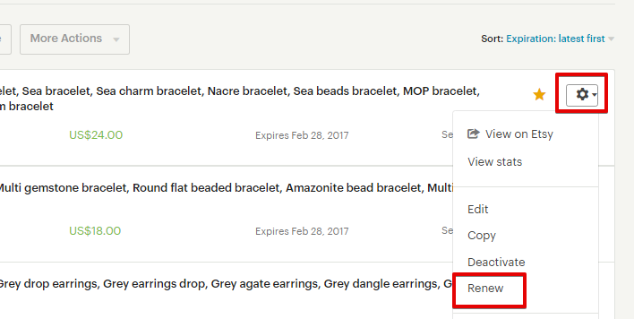
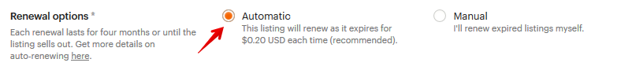
Стоимость повторного размещения листинга – $0.20. Или 1 бесплатный ли-
стинг.
Также вы можете для каждого листинга выставить настройку, чтобы он автома-
тически продлялся по истечении 4 месяцев. Для этого в параметрах товара вы-
ставите опцию Renewal option как Automatic.
Это также будет стоить 20 центов или 1 бесплатный листинг.
Что такое обновление листингов (renew)
Вы можете обновить свои листинги до истечения срока в 4 месяца.
Зачем это нужно? Прежде всего потому, что дата размещения вашего товара
влияет на позиции листинга в поиске. Чем «новее» товар, тем выше он может
оказаться в поисковой выдаче Этси. Эффект может достигать даже нескольких
страниц.
Но в последнее время эффект роста позиций благодаря renew сильно снизился.
И этот фактор уже не так важен для позиций в поиске Etsy, как раньше. Есть
некоторые нюансы, которые правильнее всего проверять в конкретном мага-
зине и на конкретном поисковом запросе.
Стоимость обновления (ренью) листинга равна стоимости размещения товара –
$0.20. Или 1 бесплатный листинг, если они у вас есть.
Как часто нужно обновлять листинги
Это зависит только от вас. Попробуйте обновить листинг и понаблюдать за ре-
зультатами (изменение позиций, количество переходов). Также проследите, как
долго длится «эффект» от ренью, то есть сколько времени проходит, прежде
чем ваш листинг возвращается на прежние позиции. Так вы поймёте, как часто
в вашем случае стоит обновлять товар.
Для примера, мы проверяли влияние обновления листинга на позиции разных
листингов своего магазина. В одном случае по очень конкурентной фразе после
Renew товар поднялся с 11-й страницы результатов поиска на 3-ю. Но уже че-
рез 12 часов вернулся обратно на 11-ю страницу. В другом случае обновление
даты размещения листинга никак не сказывалось на позициях. А также была
ситуация, когда ренью позволило временно улучшить местоположение ли-
стинга в категориях.
Поэтому, повторюсь, всё индивидуально. Рекомендую проверять, как эта функ-
ция будет работать у вас при ваших исходных данных.
И не забывайте, что каждое обновление стоит 20 центов (или 1 бесплатный ли-
стинг). Учитывайте это при выставлении стоимости товара.
Как вычислить стоимость товара
На эту тему написано немало книг, но попробуем уместить это в двух кратких
вариантах.
Способ 1 – «снизу-вверх»
Первым делом нам нужно посчитать затраты на расходные материалы, напри-
мер, для физических товаров это может быть стоимость ткани, ниток, камней,
бусин, глины, деревянных заготовок и т.п.
Затем подсчитайте дополнительные расходы. Сюда относятся, например, стои-
мость оборудования, проезда до почты и в магазины с материалами, услуги фо-
тографа и модели, аренда мастерской. Просуммируйте эти затраты и разделите
на примерное количество товаров, которые вы планируете создать в год. Так
вы поймёте, сколько дополнительных затрат включено в стоимость товара.
Третье – трудозатраты. Подсчитайте, сколько времени уходит на создание 1
единицы товара. На упаковку и поездку на почту. Фотографирование и обра-
ботку снимков. На создание листинга и его рекламу в соцсетях. Подсчитайте,
сколько часов у вас уходит в сумме на 1 товар. И умножьте это на стоимость
вашего часа работы. Как его вычислить? Разделите ваш желаемый ежемесяч-
ный доход на количество рабочих часов – это и будет стоимость часа работы.
Например, при 40-часовой рабочей неделе в месяц получается примерно 160
рабочих часов. И если вы хотите зарабатывать 30 000 рублей, то стоимость ва-
шего часа получается около 185-190 рублей. Чем быстрее вы делаете товар,
тем он дешевле.
Это упражнение также позволяет понять, во сколько вам обходится сидение пе-
ред телевизором или в соцсетях :)
Теперь просуммируйте значения всех трёх категорий затрат – это и есть себе-
стоимость товара.
Учтите также и все комиссии:
• Etsy
o $0.20 за размещение листинга
o $0.20 за каждое обновление (ренью)
o 5% комиссия за продажу (от стоимости товара и доставки)
o VAT налог / НДС (если есть)
• Paypal
o 4.4% от полной стоимости листинга (товар + доставка)
o $0.30 фиксированная комиссия
• Комиссия посредника PayPal (если есть)
Всё это следует учитывать, если вы планируете относиться к магазину на Этси
как к серьезному и полноценному бизнесу. По крайней мере весь этот анализ
позволит понять, как можно снизить себестоимость производства ваших това-
ров. Например, стоит ездить на почту только 1-2 раза в неделю. Или делать
упаковочные коробки самому, а не покупать (или наоборот).
Способ 2 – «сверху-вниз»
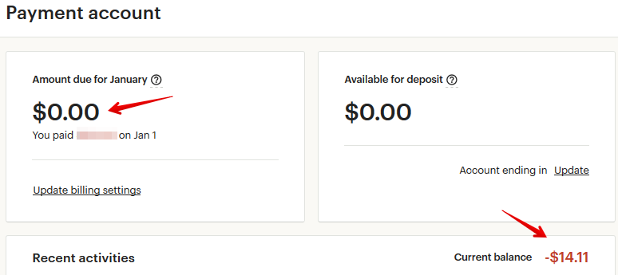
В этом случае следует проанализировать цены конкурентов на Etsy, чтобы при-
мерно понять, в какой ценовой категории предстоит работать. И как себестои-
мость ваших товаров соотносится с ценами рынка.
После этого подумайте о вашей целевой аудитории и предположите, ради ка-
ких целей они могут купить ваш товар, и сколько примерно они готовы за него
отдать. Например, люди часто тратят на подарки большие суммы, а на вещах
для себя экономят.
На основе этого выставите стоимость товара и посмотрите, как пойдут дела. По
результатам скорректируйте её в большую или меньшую сторону.
Когда оплачивать комиссии Etsy
Если у вас подключен PayPal, то комиссии за все размещенные и проданные
товары, обновления и рекламу вы платите на Этси не сразу «по факту», а с 1 по
20 число следующего месяца.
Например, если вы в сентябре разместили 5 товаров (по 20 центов каждый), то
комиссию за них (1 доллар) должны оплатить с 1 по 20 октября.
Раньше 1-го числа нового месяца кнопка оплаты (Pay now) не появляется.
Посмотреть, сколько вы должны Etsy, можно на странице Shop Manager –
Finances – Payment account в левой колонке Amount due for…
До конца месяца здесь будут стоять нули, а с 1-го числа и до момента оплаты –
сумма комиссий за прошлый месяц.
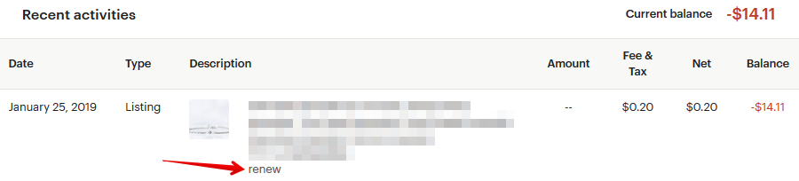
В графе Current balance показывается текущий долг перед Etsy, то есть сколько
нужно заплатить в следующем месяце.
Если у вас в магазине подключен Etsy Payments, то все комиссии автоматически
списываются с вашей прибыли/продаж. Если за текущий месяц продаж не было,
а комиссии накопились – оплатить их можно с банковской карты.
Как узнать, за что именно начислена комиссия Etsy
На странице Finances – Payment account есть таблица Recent activities со списком
всех начисленных комиссий.
Под названием листинга указано, за что взята комиссия (в данном случае, за
его обновление, renew). И размер комиссии – это графа Fee&Tax.
Перечислю основные варианты комиссий:
• renew – обновление листинга
• auto-renew sold – автообновление после продажи
• renew expired – обновление листинга, срок размещения которого истёк
• VAT – НДС (например, для российских продавцов)
• transaction – Etsy-комиссия за продажу (5%)
• shipping transaction — комиссия со стоимости доставки (5%)
• listing – комиссия за размещение нового товара
• multi-quantity – если один листинг купили в количестве нескольких штук
(например, 5 одинаковых тарелок), то за 2-й, 3-й и последующие единицы
товара удерживается комиссия 20 центов (как будто вы его разместили
вновь и его сразу же купили)
• sales tax – налог, который платят покупатели некоторых штатов США и
ряда других стран (нужно вернуть обратно Etsy)
• digital VAT – налог на цифровые товары, который платят покупатели из
ряда стран (например, Евросоюза) и который нужно вернуть обратно Etsy
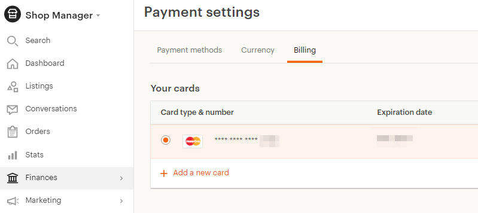
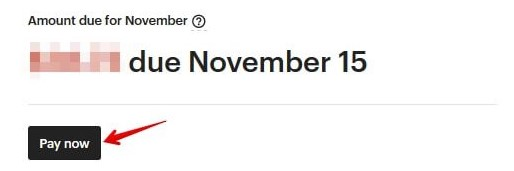
• gift wrap – комиссия 5% за подарочную упаковку
• Etsy Ads – комиссия за рекламу Etsy Ads (добавляется в счёт каждый день)
• Offsite Ads – комиссия за рекламу Offsite Ads
• credit – возврат на ваш баланс уже уплаченной комиссии (например, ко-
гда заказ отменён)
Как можно оплатить комиссии Etsy
Оплатить можно двумя способами – или с карты, или со счёта PayPal. Выби-
райте тот способ, который Вам удобнее.
Добавить реквизиты карты можно на странице Shop Manager – Finances – Pay-
ment settings – Billing – Add a new card.
Если у вас подключен PayPal, то оплатить комиссии можно только с 1-го числа
нового месяца. Раньше этого дня кнопка оплаты Pay now не появляется.
Можно ли оплачивать комиссии сразу, не дожидаясь первого
числа нового месяца
Раньше так можно было делать, но сейчас эта возможность исчезла.
Оплачивать комиссии на данный момент можно только с 1-го числа нового ме-
сяца.
Что будет, если вовремя не оплатить комиссию
Etsy могут ограничить действие вашей учётной записи, вплоть до закрытия ма-
газина. Поэтому старайтесь оплачивать всё в срок.
Можно ли выставить сумму доставки после оплаты покупа-
теля
Нет, стоимость доставки необходимо указать заранее. Покупатель сразу опла-
чивает единую сумму (стоимость товара и доставки).
Как заранее узнать стоимость доставки товара
Лучше всего обратиться за консультацией в почтовую службу своей страны или
посмотреть информацию на сайте. Например, для Почты России все расценки
можно посмотреть прямо на их сайте, а также уточнить у онлайн-консультанта.
https://www.pochta.ru/support/post-rules/tariffs
В настоящий момент у Почты России есть 2 варианта международных почтовых
отправлений для товаров – мелкий пакет (до 2 кг) и посылка (до 20 кг).
Максимальный размер мелкого пакета – сумма длины, ширины и высоты не
больше 90 см (самая длинная сторона не больше 60 см).
Максимальный размер посылки – сумма длины, ширины и высоты не больше
200 см (самая длинная сторона не больше 105 см).
В случае с мелким пакетом не важно, в какую страну вы отправляете товары –
цена зависит только от веса. Например, мелкий пакет до 100 грамм стоит 330